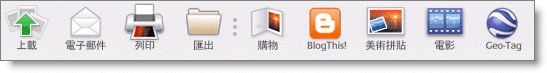

Picasa 網路相簿
使用Gmail 帳號可以直接登入。登入後於上方的 Setting 更改基本資料，包含相簿網址、顯示的暱稱、語言。直接從網頁上傳圖片一次僅能夠上傳五張，搭配上 Picasa 軟體便可以方便將電腦中的照片上傳。
___________________________________________________________________________________
1.從 Picasa 上傳
•按一下Picasa「相片庫」底端的 [上載] 按鈕，將所選相片上載到「Picasa 網路相簿」。

•使用資料夾或相簿標題中的 [分享] 按鈕上載相片，並傳送電子郵件邀請函給親朋好友。
2.從瀏覽器上載
•可以透過 Internet Explorer、Google 瀏覽器、Firefox 或 Safari，直接將自己硬碟中的相片上載到「Picasa 網路相簿」。 依照下列步驟操作：
1.登入「Picasa 網路相簿」。
2.按一下 [上載] 按鈕。
3.選擇基本上載程式 (所有瀏覽器) 或上載控制項 (僅適用於 Internet Explorer)。
3.將您所做的編輯同步到 Picasa 網路相簿
可以將 Picasa 和「Picasa 網路相簿」搭配使用，確保最近所做的變更會反映在線上相簿中。
|